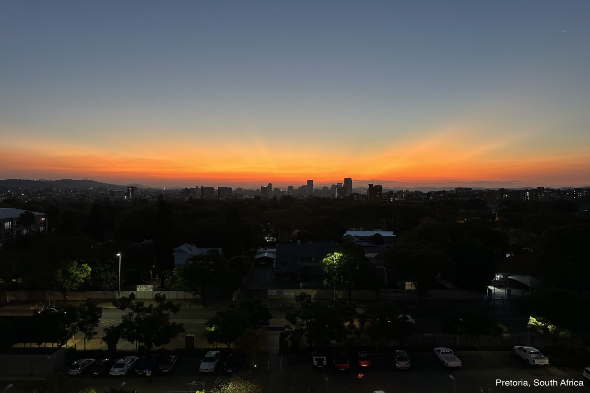

Tim Cejka

Conferences and seminars

Upcoming:
- GNLAB Conference at Chicago Booth, Chicago, US.
November 12-13, 2026
Past conferences and seminars:
Economics
- IHS Junior Fellowship Conference, Charlotte, US.
Aug 13-16, 2026
- NBER Fiscal and Economic Effects of Innovation and Productivity Policies Conference, DC, US.
June 4, 2026
- UC Berkeley Labor Lunch, Berkeley, US.
April 24, 2026
- Opportunity Lab Research Workshop, Berkeley, US.
December 10, 2025
- International Institute of Public Finance Annual Congress, Nairobi, Kenya.
August 20-22, 2025
- Sixth World Labor Conference Hosted by Society of Labor Economists (SOLE), Toronto, Canada.
June 27-29, 2025
- NBER Fiscal and Economic Effects of Innovation and Productivity Policies Workshop, DC, US.
May 15, 2025
- Ideas in Action: An Entrepreneurship Papers Workshop, George Mason University, DC, US.
March 21-22, 2025
- Association for the Study of Religion, Economics, and Culture (ASREC) Conference, George Mason University, DC, US.
March 7-8, 2025
- UC Berkeley Development Lunch, Berkeley, US.
February 4, 2025
- GNLAB Conference at Chicago Booth, Chicago, US.
November 14-15, 2024
- UC Berkeley Development Lunch, Berkeley, US.
November 12, 2024
- UC Berkeley Public Finance Seminar, Berkeley, US.
October 28, 2024
- UC Berkeley Labor Lunch, Berkeley, US.
October 4, 2024
- International Institute of Public Finance Annual Congress, Prague, Czech Republic.
August 21 – 23, 2024
- 2024 Price Theory Summer Camp, University of Chicago, US.
June 23-27, 2024
- UC Berkeley Development Lunch, Berkeley, US.
February 20, 2024
- Research Visit, University of Michigan, Ann Arbor, US.
November 12-17, 2023
- GNLAB Conference at Chicago Booth, Chicago, US.
November 9-10, 2023
- SA-TIED II Work-in-Progress Workshop, Johannesburg, South Africa.
April 19-20, 2023
- Association for the Study of Religion, Economics, and Culture (ASREC) Conference, Harvard University, US.
March 17-18, 2023
- Association for the Study of Religion, Economics, and Culture (ASREC) Europe Conference, London, UK.
October 21-22, 2022
- Chicago Booth Research Professionals Workshop, Chicago, US.
March 25, 2022
Philosophy
- Philosophy of Science Association Biennial Meeting, Pittsburgh, US.
November 10-13, 2022